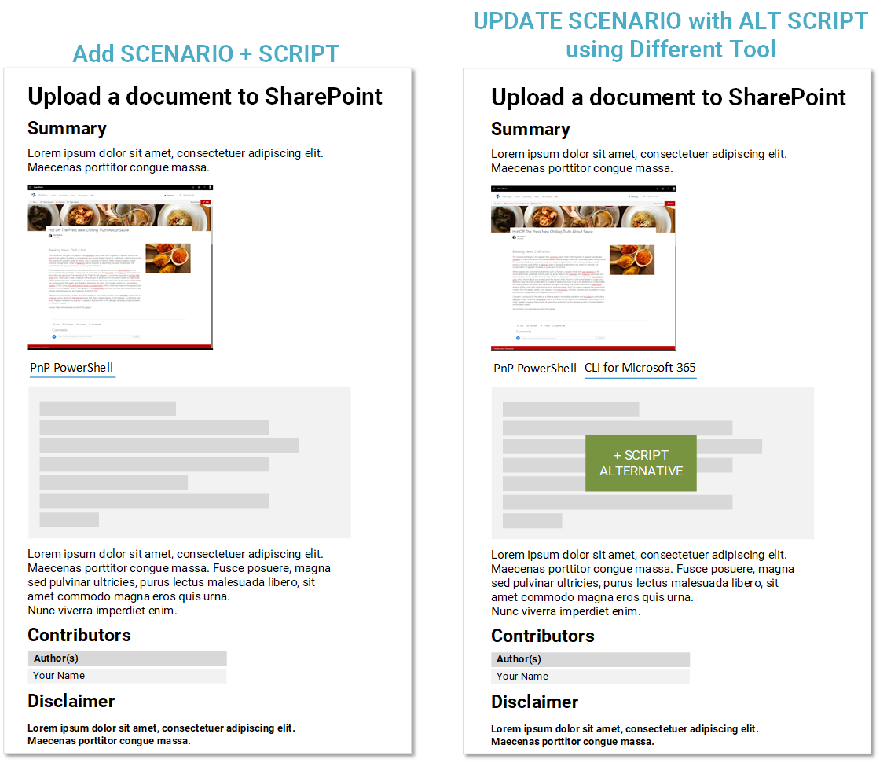

How Can I Contribute
If you'd like to contribute to this repository, please read the following guidelines. Contributors are more than welcome to share their scripts with others in this centralized location.
How can I contribute
There are ways to contribute:
- Create a scenario e.g. Upload a document to SharePoint, then add your script to the scenario
- Extend an existing scenario that does NOT have an example for the tool e.g. a scenario containing only CLI for Microsoft 365 sample, you can submit an updated scenario with a PnP PowerShell equivalent
- Logging an issue in GitHub if you have feedback about the site or samples

To get started quickly, check out the Preparing a submission guide
Please register your idea in the issue list and assign to yourself, there maybe others considering similar scripts.
Script Quality
In the PnP Script Samples, we do not place any specific quality requirements on the scripts themselves. To help guide you for suggested ways to present your scripts:
- Indent the scripts when encapsulating blocks in curly braces - this make it easier to read the blocks and understand the script
- Use comments, if you feel the script isn't clear by itself what it is doing. However, do not overload the script with comments either.
- Use good naming for variables to understand what is being stored
- Check the script works as you would expect it to, preferably include a screenshot of the end result, to help guide the reader.
- Remove any lines that show details of your tenant, e.g. usernames, passwords, URLs (replace with Contoso).
Typos, Issues, Bugs and contributions
Whenever you are submitting any changes to the SharePoint repositories, please follow these recommendations.
- Always fork the repository to your own account before making your modifications
- Do not combine multiple changes to one pull request. For example, submit any samples and documentation updates using separate PRs. If you do no worries, this is a preference to help us organize the PRs.
- If your pull request shows merge conflicts, make sure to update your local master to be a mirror of what's in the main repo before making your modifications. In your fork, GitHub shows a sync button to update your branch.